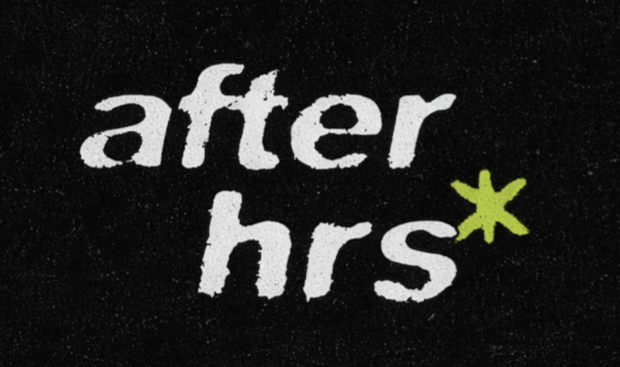
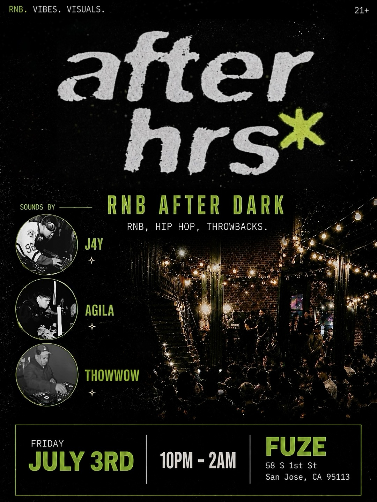
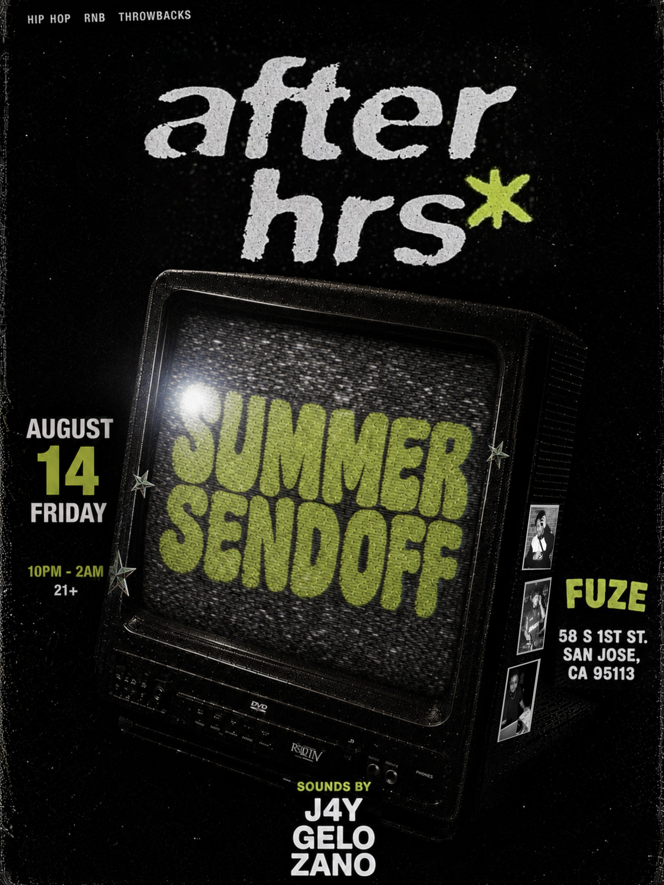
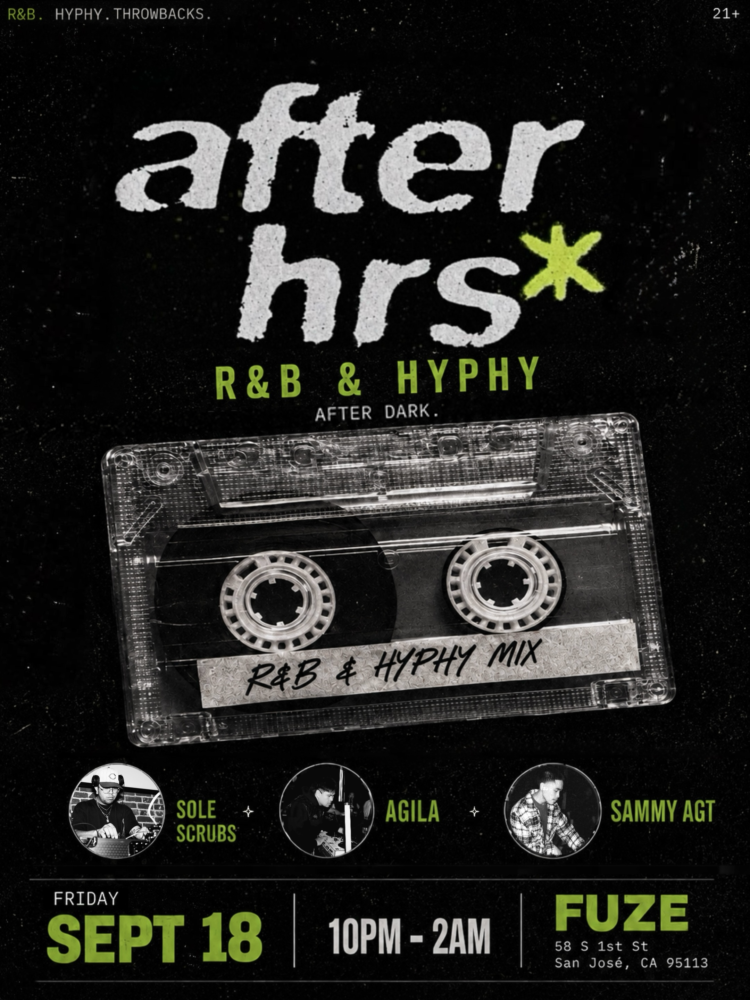
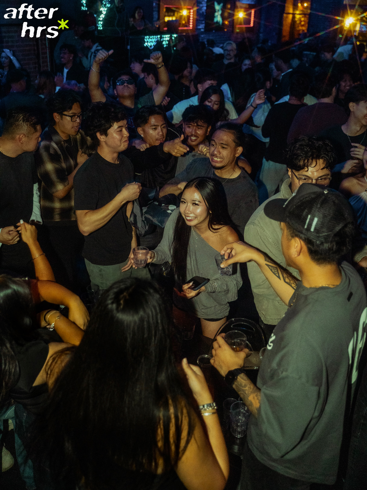
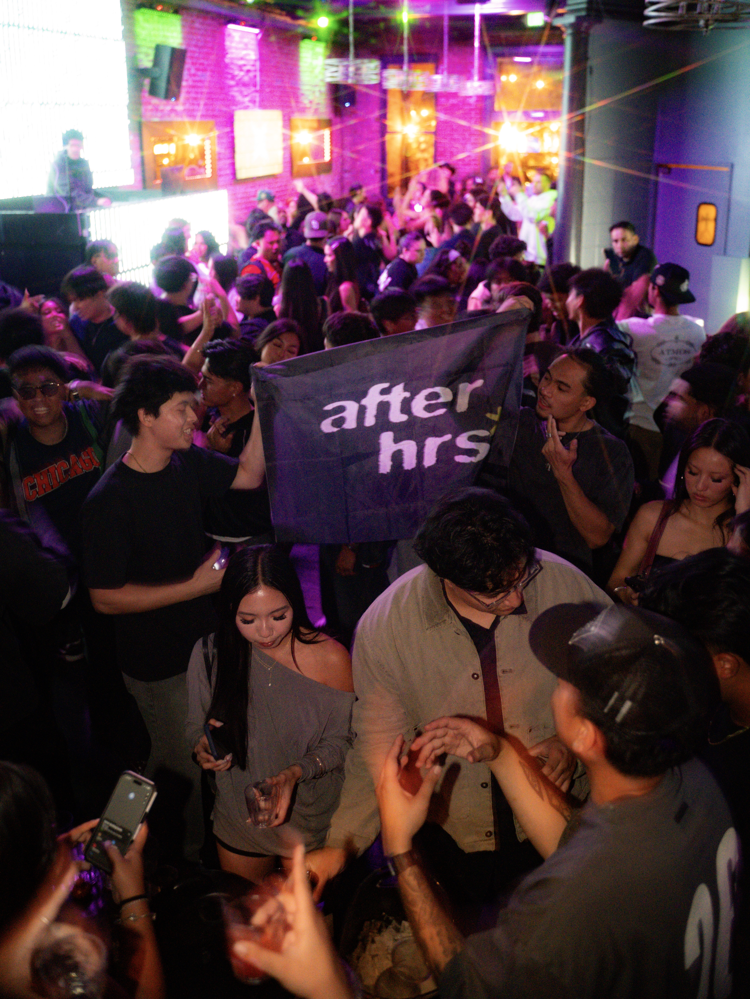

Event Marketing · Branding · Social Media
After Hrs
After Hrs is an R&B-focused nightlife event that I developed from concept to execution. I created the event identity, promotional materials, and social media content while also coordinating the event and shaping the overall creative direction.
Event Creative & Marketer
Branding · Marketing · Design
Instagram · TikTok
Event Identity
I created the After Hrs identity to reflect the atmosphere I wanted the event to have: dark, understated, and relaxed with a strong nightlife feel. From the logo to the visual direction, I developed the branding to create a recognizable identity that could carry across flyers, social media, and the event itself.

Event Promotion
I designed the promotional materials from concept to final execution, experimenting with different layouts, imagery, typography, and visual treatments while keeping the After Hrs identity consistent. Each promotion was created to communicate the event while building a distinct visual presence across social media.



Event Coordination
I took the event from the initial idea to a fully executed experience, handling the planning and coordination needed to bring the concept to life. I managed the event details while also overseeing the creative elements, music, atmosphere, and overall experience to make sure the final event reflected the original vision.


Takeaway
After Hrs gave me the opportunity to take full ownership of a creative project from beginning to end. I was able to combine branding, graphic design, social media marketing, music, and event production while learning how each part of a project contributes to the final experience.